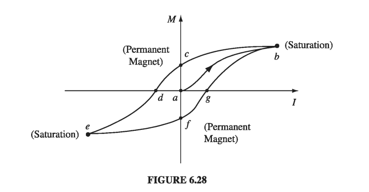
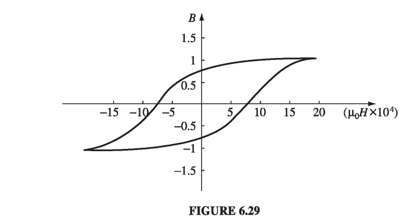

6.4: Linear and Nonlinear Media#
6.4.1: Magnetic Susceptibility and Permeability#
In paramagnetic and diamagnetic materials, the magnetization is sustained by the field; when B is removed, M disappears. In fact, for most substances the magnetization is proportional to the field, provided the field is not too strong. For notational consistency with the electrical case (Eq. 4.30), I should express the proportionality thus
but custom dictates that it be written in terms of H, instead of B:
The constant of proportionality \( \chi_m \) is called the magnetic susceptibility; it is a dimensionless quantity that varies from one substance to another - positive for paramagnets and negative for diamagnets. Typical values are around \( 10^{-5} \).
Materials that obey Eq. 6.29 are called linear media. In view of Eq. 6.18,
for linear media. Thus B is also proportional to H:
where
\( \mu \) is called the permeability of the material. In a vacuum, where there is no matter to magnetize, the susceptibility \( \chi_m \) vanishes, and the permeability is \( \mu_0 \). That’s why \( \mu_0 \) is called the permeability of free space.

Example 6.3#
An infinite solenoid (n turns per unit length, current I), is filled with linear material of susceptibility \( \chi_m \). Find the magnetic field inside the solenoid.

Since B is due in part to the bound currents (which we don’t yet know), we cannot compute it directly. However, this is one of those symmetrical cases in which we can get H from the free current alone, using Ampere’s law in the form of Eq. 6.20
According to Eq. 6.31, then
If the medium is paramagnetic, the field is slightly enhanced; if it’s diamagnetic, the field is somewhat reduced. This reflects the fact that the bound surface current
is in the same direction as I, in the former case (\( \chi_m > 0 \)), and opposite in the latter (\( \chi_m < 0 \)).
You might suppose that linear media escape the defect in the parallel between B and H: since M and H are now proportional to B, does it not follow that their divergence, like B’s, must always vanish? Unfortunately, it does not; at the boundary between two materials of different permeability, the divergence of M can actually be infinite. For instance, at the end of a cylinder of linear paramagnetic material, M is zero on one side but not on the other. For the “Gaussian pillbox” shown in Fig 6.23, \( \oint \vec{M} \cdot \mathrm{d} \vec{a} \neq 0 \), and hence, by the divergence theorem, \( \nabla \cdot \vec{M} \) cannot vanish everywhere within it.

Incidentally, the volume bound current density in a homogeneous linear material is proportional to the free current density:
In particular, unless free current actually flows through the material, all bound current will be at the surface.
6.4.2: Ferromagnetism#
In a linear medium, the alignment of atomic dipoles is maintained by a magnetic field imposed from the outside. Ferromagnets - which are emphatically not linear - require no external fields to sustain magnetization; the alignment is “frozen in.” Like paramagnetism, ferromagnetism involves the magnetic dipoles associated with the spins of unpaired electrons. The new feature, which makes ferromagnetism so different from paramagnetism, is the interaction between nearby dipoles: In a ferromagnet, each dipole “likes” to point in the same direction as its neighbors. The reason for this preference is essentially quantum mechanical, and I won’t try to explain it here; it is enough to know that the correlation is so strong as to align virtually 100% of the unpaired electron spins. If you could somehow magnify a piece of iron and “see” the individual dipoles as tiny arrows, it would look something like Fig. 6.25, with all the spins pointing the same way.
But if that is true, why isn’t every wrench and nail a powerful magnet? The answer is that the alignment occurs in relatively small patches, called domains. Each domain contains billions of dipoles, all lined up (these domains are actually visible under a microscope, given suitable etching techniques - see Fig 6.26), but the domains themselves are randomly oriented. The household wrench contains an enormous number of domains, and their magnetic fields cancel, so the wrench as a whole is not magnetized. (Actually, the orientation of domains is not completely random; within a given crystal, there may be some preferential alignment along the crystal axes. But there will be just as many domains pointing one way as the other, so there is still no large-scale magnetization. Moreover, the crystals themselves are randomly oriented within any sizable chunk of metal.)
How, then, would you produce a permanent magnet, such as they sell in toy stores? If you put a piece of iron into a strong magnetic field, the torque \( \vec{N} = \vec{m} \times \vec{B} \) tends to align the dipoles parallel to the field. Since they like to stay parallel to their neighbors, most of the dipoles will resist this torque. However, at the boundary between two domains, there are competing neighbors, and the torque will throw its weight on the side of the domain most nearly parallel to the field; this domain will win some converts, at the expense of the less favorably oriented one. The net effect of the magnetic field, then, is to move the domain boundaries. Domains parallel to the field grow, and the others shrink. If the field is strong enough, one domain takes over entirely, and the iron is said to be saturated.


It turns out that this process (the shifting of domain boundaries in response to an external field) is not entirely reversible: When the field is switched off, there will be some return to randomly oriented domains, but it is far from complete; there remains a preponderance of domains in the original direction. You now have a permanent magnet.
A simple way to accomplish this, in practice, is to wrap a coil of wire around the object to be magnetized (Fig. 6.27). Run a current I through the coil; this provides the external magnetic field (pointing to the left in the diagram). As you increase the current, the field increases, the domain boundaries move, and the magnetization grows. Eventually, you reach the saturation point, with all the dipoles aligned, and a further increase in current has no effect on M (Fig. 6.28, point b).
Now suppose you reduce the current. Instead of retracing the path back to \( \vec{M} = 0 \), there is only a partial return to randomly oriented domains; M decreases, but even with the current off there is some residual magnetization (point c). The wrench is now a permanent magnet. If you want to eliminate the remaining magnetization, you’ll have to run a current backwards through the coil (a negative I). Now the external field points to the right, and as you increase I (negatively), M drops down to zero (point d). If you turn I still higher, you soon reach saturation in the other direction-all the dipoles now pointing to the right (e). At this stage, switching off the current will leave the wrench with a permanent magnetization to the right (point f). To complete the story, turn I on again in the positive sense: M returns to zero (point g), and eventually to the forward saturation point (b).

The path we have traced out is called a hysteresis loop. Notice that the magnetization of the wrench depends not only on the applied field (that is, on/), but also on its previous magnetic “history.” For instance, at three different times in our experiment the current was zero (a, c, and f), yet the magnetization was different for each of them. Actually, it is customary to draw hysteresis loops as plots of B against H, rather than M against I. (If our coil is approximated by a long solenoid, with n turns per unit length, then \( H = nI \), so H and I are proportional. Meanwhile, \( \vec{B} = \mu_0 (\vec{H} + \vec{M}) \), but in practice M is huge compared to H, so to all intents and purposes B is proportional to M.)

To make the units consistent (teslas), I have plotted \( (\mu_0 H) \) horizontally (Fig. 6.29); notice, however, that the vertical scale is \( 10^4 \) times greater than the horizontal one. Roughly speaking, \( \mu_0 \vec{H} \) is the field our coil would have produced in the absence of any iron; B is what we actually got, and compared to \( \mu_0 \vec{H} \), it is gigantic. A little current goes a long way, when you have ferromagnetic materials around. That’s why anyone who wants to make a powerful electromagnet will wrap the coil around an iron core. It doesn’t take much of an external field to move the domain boundaries, and when you do that, you have all the dipoles in the iron working with you.

One final point about ferromagnetism: It all follows, remember, from the fact that the dipoles within a given domain line up parallel to one another. Random thermal motions compete with this ordering, but as long as the temperature doesn’t get too high, they cannot budge the dipoles out of line. It’s not surprising, though, that very high temperatures do destroy the alignment. What is surprising is that this occurs at a precise temperature (\( 770^\circ C \), for iron). Below this temperature (called the Curie point), iron is ferromagnetic; above, it is paramagnetic. The Curie point is rather like the boiling point or the freezing point in that there is no gradual transition from ferro- to para-magnetic behavior, any more than there is between water and ice. These abrupt changes in the properties of a substance, occurring at sharply defined temperatures, are known in statistical mechanics as phase transitions.